使用 S7-1200 与 S7-300 用 CP342-5 进行主从通信，这里S7-1200 的 CM1243-5 做为主站，将 CP342-5 做从站。
硬件：
软件：
S7-300 用 CP342-5 做 DP 从站，S7-1200 通过 CM1243-5 做主站，这种方式可以分2种情况来操作，具体如下：
CM1243-5 做 DP 主站，S7-300 的 CP342-5 DP 接口做 DP 从站，使用 Step7 V13 在一个项目中操作。
使用 STEP7 V13 创建一个新项目，并通过“添加新设备”组态 S7-1200 站 1243-5 m，选择 CPU1214C DC/DC/DC V2.1；接着组态S7-300 站 CP342-5 s，选择 CPU 317-2 PN/DP，如图 1 所示。
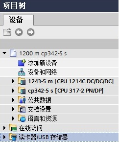
图 1 在新项目中插入 S7-1200 站和 S7-300 站
组态 CM1243-5 的 DP 接口，进入 CM1243-5 的属性框，添加子网“PROFIBUS_1”，站址选择 2，如图 2 所示。
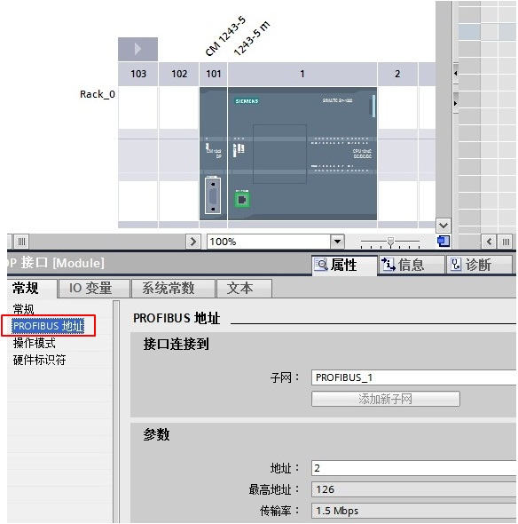
图 2 组态 CM1243-5
组态 CP342-5 DP 接口，进入 DP 接口的属性框，在“PROFIBUS 地址”界面，子网选择“PROFIBUS_1”，地址选择 3，如图 3 所示。
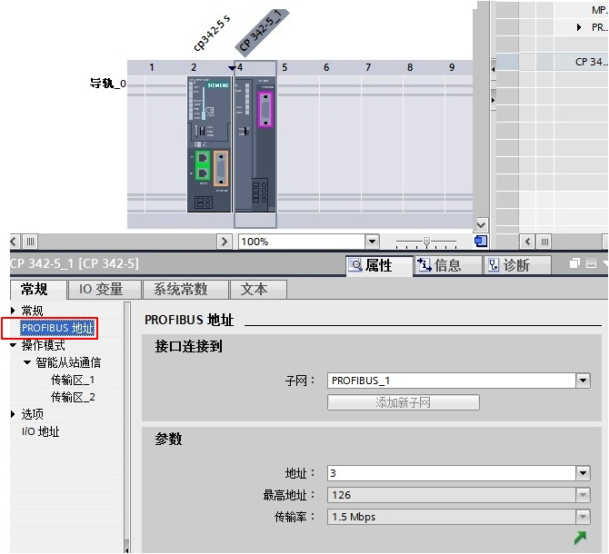
图 3 组态从站 CP342-5 的 DP 接口
在“操作模式”界面，操作模式选择“DP 从站”，分配的 DP 主站选“1243-5 m.CM1243-5.DP 接口”，在“传输区域”创建 2 个区域，输入输出各 10 个字节；可以点击“智能从站通信”中的“传输区_1”和“传输区_2”，如图 4 所示。
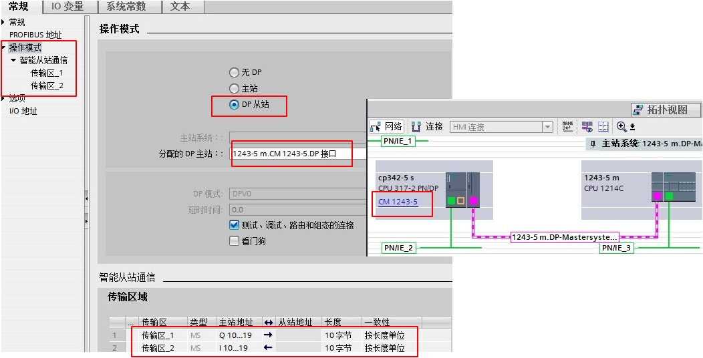
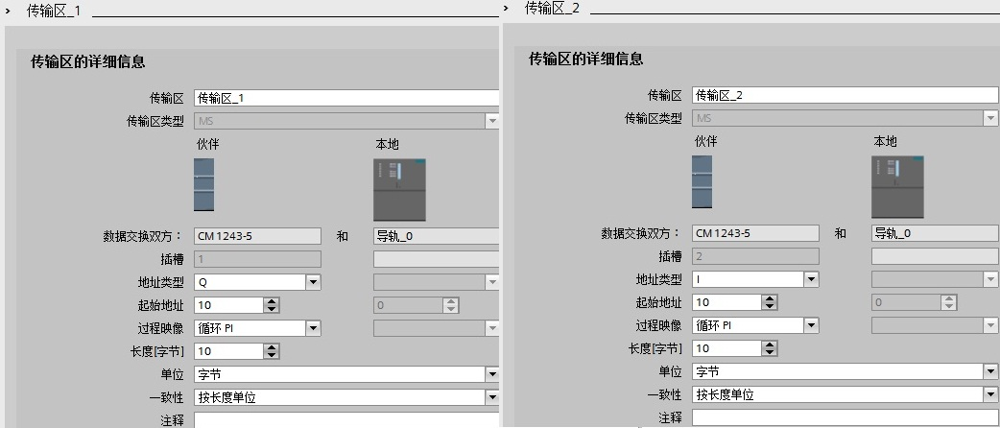
图 4 组态 CP342-5 操作模式和传输区
在 S7-300 侧，CP342-5 进行数据发送接收，需要通过编程实现。首先创建发送和接收数据块 DB1 和 DB2，定义成 101 个字节的数组，如图 5 所示。
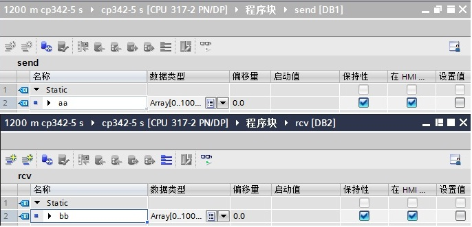
图 5 CP342-5侧创建接收发送数据块
在 OB1 中，从“指令”>“通信”>“通信处理器”>“Simatic NET CP”>“PROFIBUS DP”下，调用 DP_SEND、DP_RECV 通信指令，如图 6 所示。
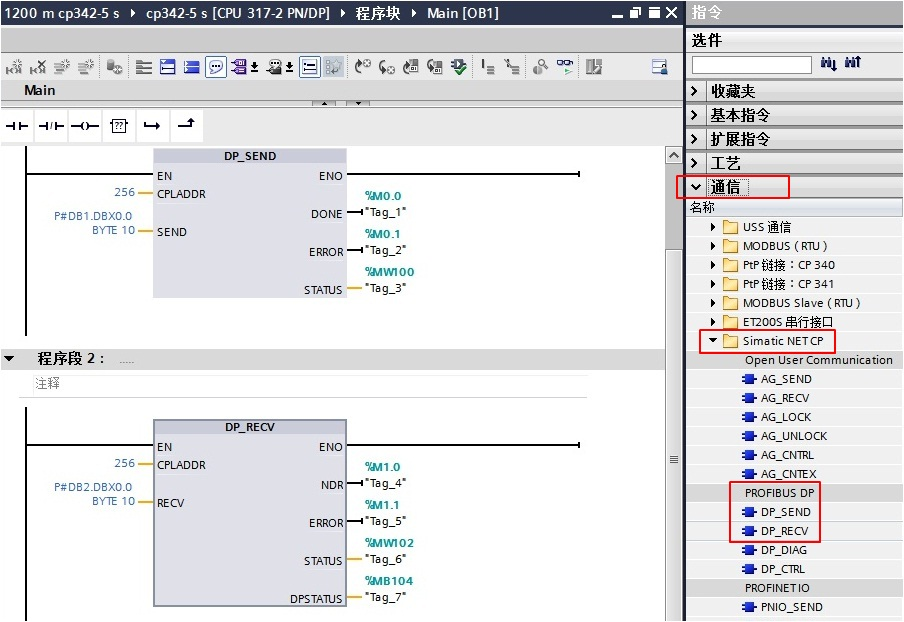
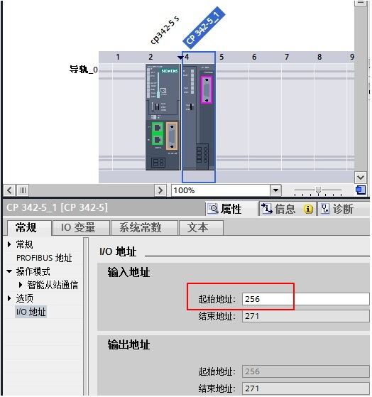
图 6 发送接收指令调用和 CPLADDR 地址
功能块参数意义如下表1.
管脚 |
说明 |
CPLADDR |
模块的起始地址（当组态 CP342-5时，在组态表中显示模块的起始地址，这里是256）； |
SEND |
发送数据区，对应从站的输入区； |
RECV |
接收数据区，对应从站的输出区； |
DONE |
发送完成位：作业完成，无错误，该位置1且保持一个脉冲； |
NDR |
接收完成位：作业完成，无错误，该位置1且保持一个脉冲； |
ERROR |
错误位：0-无错误；1-出现错误，错误原因查看STATUS； |
STATUS |
调用功能块时产生的状态代码； |
DPSTATUS |
PROFIBUS_DP的状态代码 |
表1. 功能块参数意义
在同一项目中，分别为 S7-300 和 CPU1214C 创建监控表，进行通讯测试，如图 7 所示。
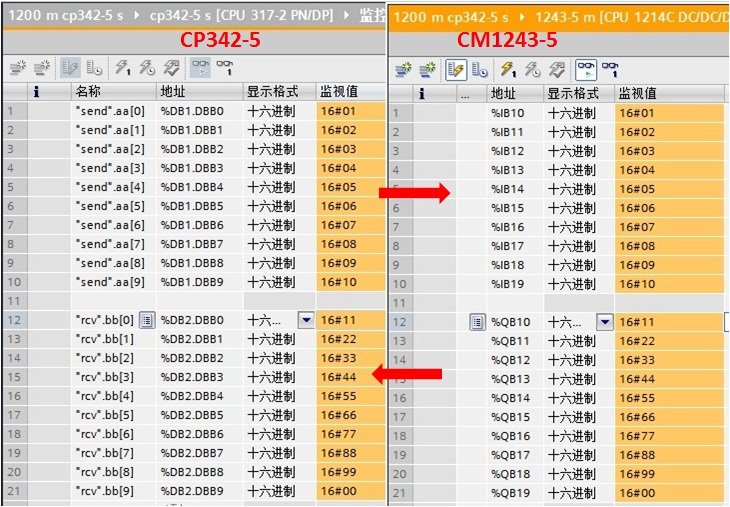
图 7 监控结果
CM1243-5 做 DP 主站，S7-300 的CP342-5 DP 接口做 DP 从站，不在一个项目中的操作，即：CPU 1214C 使用 Step7 V13，而 S7-300 使用 Step7 V5.5。
使用 STEP7 V13 创建一个新项目，并通过“添加新设备”组态 S7-1200 站 1243-5 m，组态 CM1243-5 的 DP 接口，进入 CM1243-5 的属性框，添加子网“PROFIBUS_1”，站址选择 2，如图 8 所示。
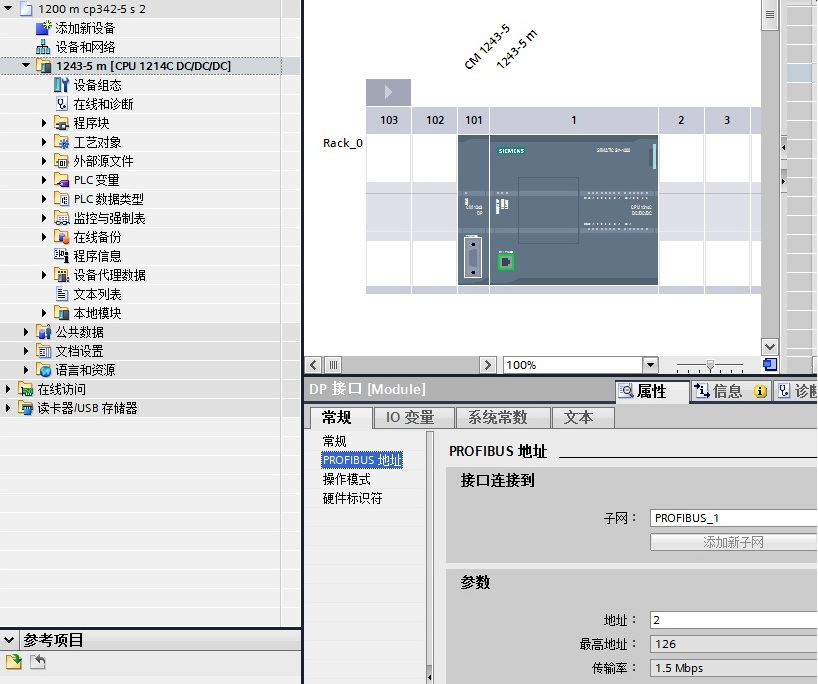
图 8 插入 S7-1200 站并组态 CM1243-5
打开软件 Step7 V13，通过“选项”进入“管理通用站描述文件（GSD）”界面， 在“源路径”选择 CP342-5 的 GSD 文件存放路径，如图 9 所示。注意：源路径中不能有中文字符。
CP342-5 的 GSD 文件下载链接：http://support.automation.siemens.com/cn/view/zh/113652。
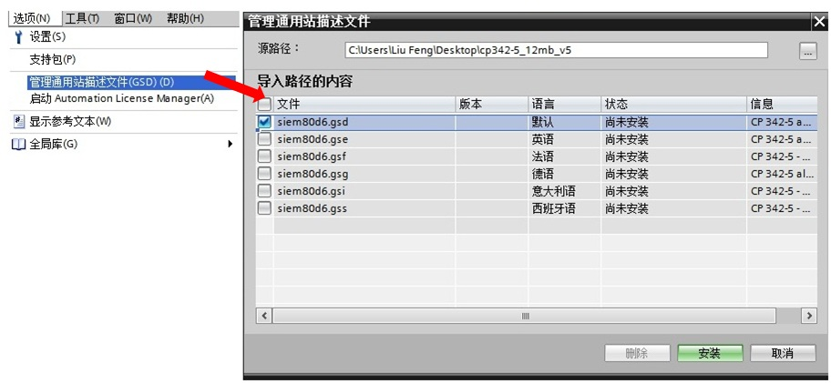
图 9 安装 CP342-5 的 GSD 文件
安装好从站 CP342-5 的 GSD 文件，在主站项目中的网络视图中，将它从选件的目录中拖拽至视图界面中，如图 10 所示。
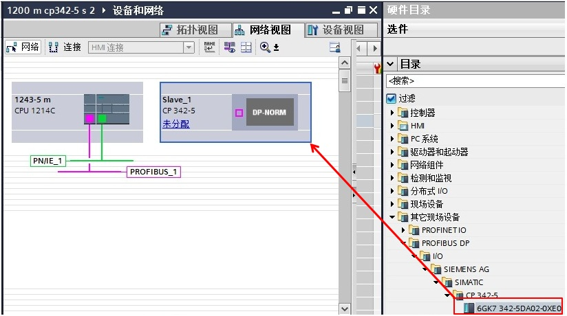
图 10 插入从站 CP342-5
点击图 10 中的蓝色字“未分配”，出现“选择主站：1243-5 m.CM 1243-5.DP 接口”选项，点击“1243-5 m.CM 1243-5.DP 接口”，主站选择成 CM 1243-5（见蓝色字），同时 CP342-5 DP 接口连接到了“主站系统：1243-5 m.DP-Mastersystem(1)”，如图 11 所示。
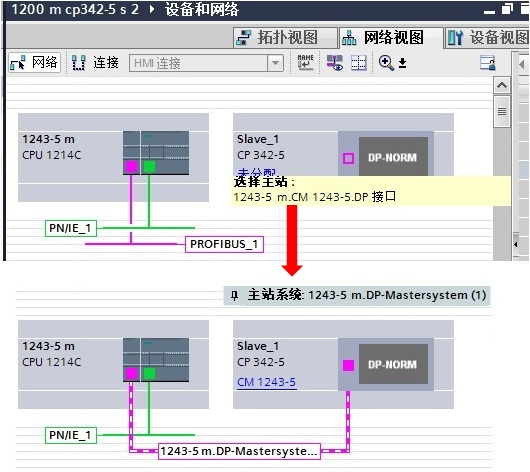
图 11 主站项目中配置从站 CP342-5
双击图 11 中的“Slave_1”,进入从站的设备视图， 将“通用模块”分别插入到设备概览的 1 槽和 2 槽。注意：1 槽表示主站组态输入 10 个字节，2 槽表示主站组态输出 10 个字节， 这与后面组态从站的输入输出需要一一对应。如图 12 所示。
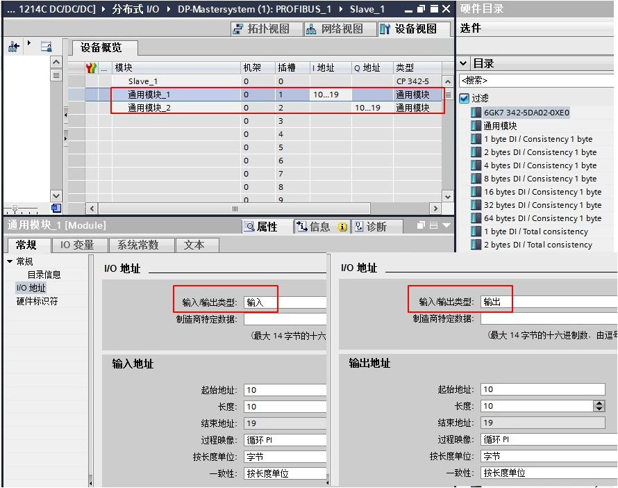
图 12 主站项目中组态从站 CP342-5 数据区
Step7 V5.5 创建一个新项目（DP从站：S7-300）。添加 CP342-5 模块，“常规”属性页中选择“PROFIBUS”接口类型，站址选择 3；“工作模式”属性页中选择“DP 从站”，如图 13 所示。
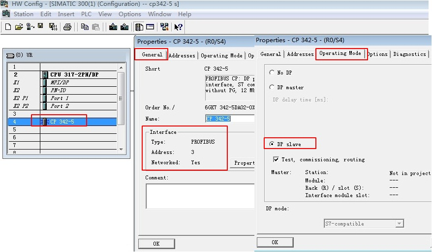
图 13 Step7 V5.5 创建 S7-300 并组态 CP342-5 的 DP 接口
在 S7-300 侧，CP342-5 进行数据发送接收，需要通过编程实现。首先创建发送和接收数据块 DB1 和 DB2，定义成 101 个字节的数组，如图 14 所示。
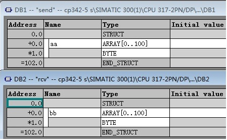
图 14 CP342-5 侧创建接收发送数据块
在 OB1中，从“Libraries”>“SIMATIC_NET_CP”>“CP 300”下，调用FC1（DP_SEND）、FC2（DP_RECV）通信指令，如图 15 所示。
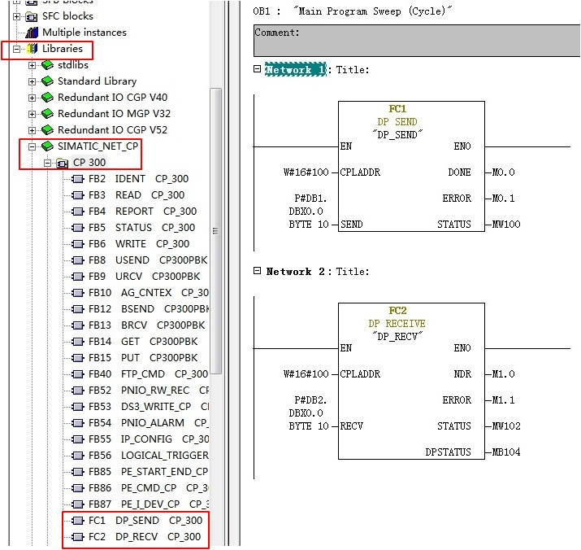
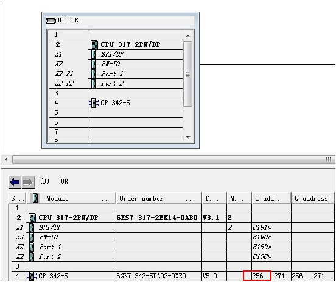
图 15 发送接收指令调用和 CPLADDR 地址
关于功能块参数意义参考上表1.。
在不同项目中，分别为 S7-300 和 CPU1214C 创建监控表，进行通讯测试，如图 16 所示。
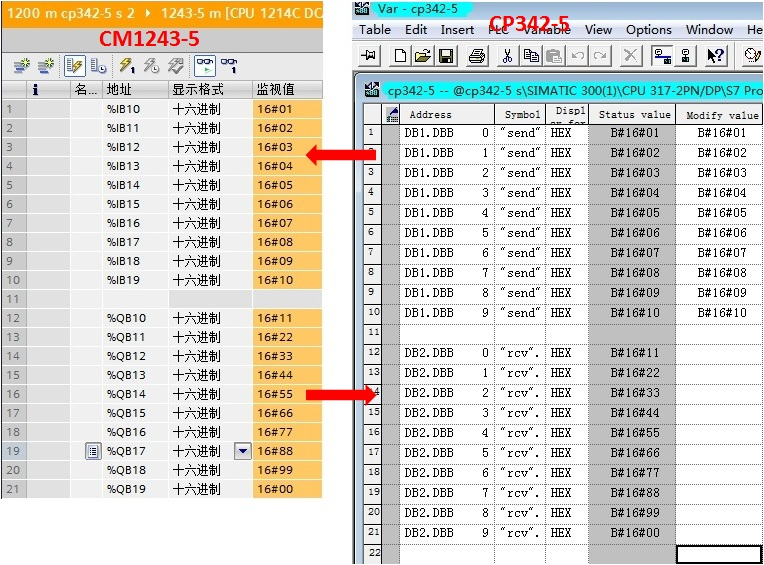
图 16 监控结果